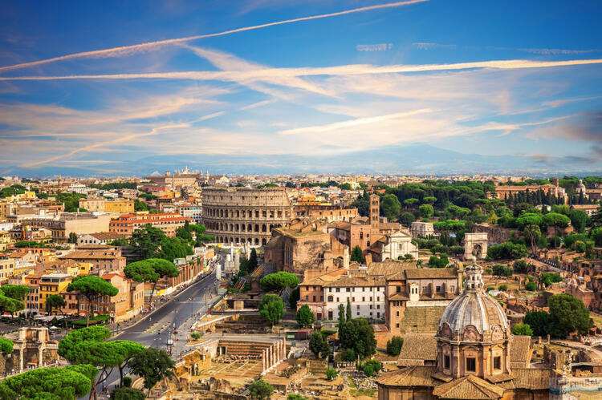

Italy
Italy is famous for ancient history, Renaissance art, regional cuisine, and world-known cities such as Rome, Florence, and Venice. It appeals both to travellers who enjoy monuments and to visitors who prefer the sea.
Tourist Guide to Europe
This page introduces several well-known countries that often appear on European travel itineraries.
Italy is famous for ancient history, Renaissance art, regional cuisine, and world-known cities such as Rome, Florence, and Venice. It appeals both to travellers who enjoy monuments and to visitors who prefer the sea.
France combines capital-city tourism with countryside routes, museums, gastronomy, and Atlantic or Mediterranean landscapes. For many tourists, Paris is only the beginning of a much wider experience.
Spain is associated with sunny weather, vibrant festivals, major cities, and long coastlines. It is a strong choice for travellers looking for both urban culture and rest by the sea.
Austria is known for music, elegant architecture, Alpine scenery, and reliable transport. It is suitable for both winter and summer tourism.
| Country | Capital | Currency | Official language | Typical attraction |
|---|---|---|---|---|
| Italy | Rome | Euro | Italian | Colosseum |
| France | Paris | Euro | French | Eiffel Tower |
| Spain | Madrid | Euro | Spanish | Sagrada Família |
| Austria | Vienna | Euro | German | Schönbrunn Palace |
